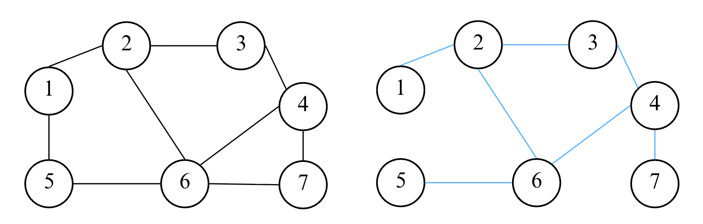
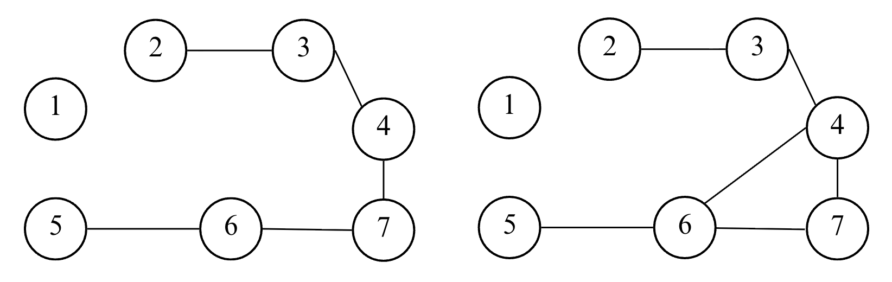
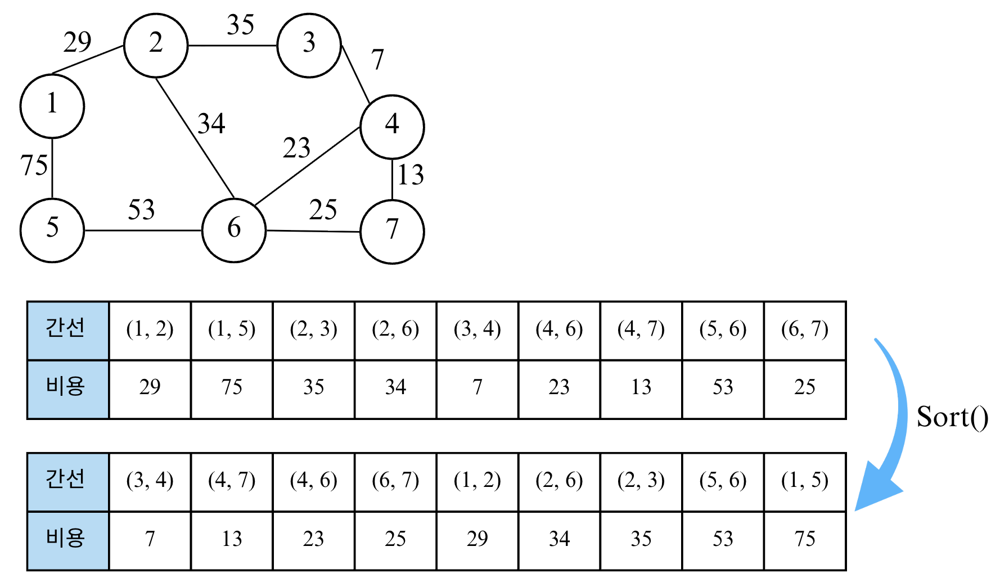
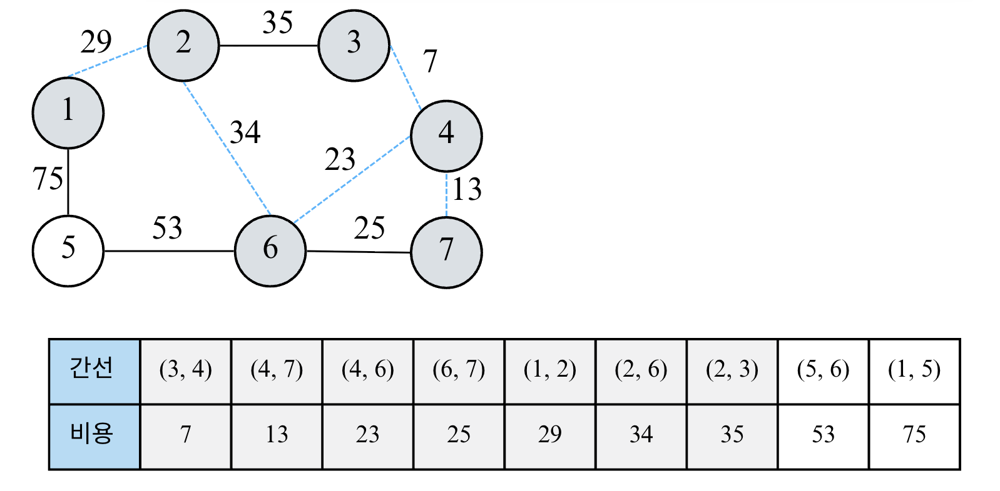

Lecture 8-1. Graph Algorithm#
DFS/BFS와 최단 경로에서 다른 내용은 모두 그래프 알고리즘의 한 유형으로 볼 수 있다. 일단, 알고리즘 문제를 접했을 때 서로 다른 개체 (혹은 객체 Object )가 연결되어 있다 는 것을 보면 가장 먼저 그래프 알고리즘을 떠올려야 한다.
서로소 집합 (Disjoint Set)#
수학에서 서로소 집합 Disjoint Sets이란 공통 원소가 없는 두 집합을 의미한다.

서로소 집합 자료구조#
서로소 집합 자료구조란 서로소 부분 집합들로 나누어진 원소들의 데이터를 처리하기 위한 자료구조 이다. “union”과 “find” 2개의 연산으로 조작할 수 있다. 서로소 집합에서 “find”연산은 특정한 원소가 속한 집합이 어떤 집합인지 알려주는 연산, “union”연산은 합집합으로 2개의 원소가 포함된 집합을 하나의 집합으로 합치는 연산이다.
서로소 집합 자료구조는 union-find 자료구조 라고 불리기도 한다. 두 집합이 서로소 관계인지를 확인할 수 있다는 말은 각 집합이 어떤 원소를 공통으로 가지고 있는지를 확인할 수 있다는 말과 같기 때문이다.
핵심 개념 요약
항목 |
설명 |
|---|---|
정의 |
서로 겹치지 않는 부분 집합들로 구성된 집합을 관리하는 자료구조 |
핵심 연산 |
find(x): 원소 |
주요 목적 |
두 원소가 “같은 집합(=같은 그룹)”에 속해 있는지 빠르게 판별하기 |
대표 활용 |
그래프의 사이클 판별, 네트워크 연결 여부, MST (최소 신장 트리) (Kruskal 알고리즘) |
기본 아이디어
각 노드는 자기 자신을 부모로 가지는 트리 형태로 시작한다.
집합을 병할할때는 루트 노드(대표자) 를 기준으로 합친다.
# 부모 노드 정보 저장
parent = [i for i in range(n+1)]
# find 연산 (경로 압축)
def find(x):
if parent[x] != x:
parent[x] = find(parent[x])
return parent[x]
# union 연산 (대표자 기준으로 합치기)
def union(a, b):
rootA, rootB = find(a), find(b)
if rootA != rootB:
parent[rootB] = rootA
경로 압축 (Path Compression)#
find() 연산을 반복할수록 트리 깊이가 깊어지면 성능이 나빠진다. -> 경로 압축을 적용하면 모든 노드가 바로 루트를 가리키게 만들어 평균 시간복잡도 O(\(\alpha(N)\))*로 줄일 수 있다. 즉, find()시 트리를 납작하게 만드는 역할을 한다.
\(\alpha\)는 아커만 함수의 역함수로 사실상 상수
예를 들어, union(a, b)로 두 집합이 합쳐진 후에, find함수로 root를 찾으면, parent가 모두 root으로 되어 후에 다시 parent를 찾고자 할때 빠른 시간안에 찾을 수 있다.
# without compression
# def find(x):
# return parent[x]
def find(x):
if parent[x] != x:
parent[x] = find(parent[x]) # 루트를 재귀적으로 찾으며 압축
return parent[x]
랭크 기반 합치기 (Union by Rank / Size)#
Union by Rank”는 항상 낮은 트리를 높은 트리에 붙여서, **트리의 높이(깊이)**를 일정하게 유지시키는 균형 유지 전략이다. 이로 인해 find()의 평균 시간이 **거의 O(1)**로 줄어든다
랭크 (rank): 트리의 높이 , 또는 노드 수(size) 를 나타내는 값.
union by rank (height) -> 높이가 낮은 트리를 높은 트리에 붙임
union by size (count) -> 노드 수가 적은 트리를 많은 쪽에 붙임
목적: 트리의 불균형 방지 (=높이의 최소화 및 breadth가 넓음 )
구현: 처음에 0 (height) 이나 1(size)로 초기화해준 후, “union”이 일어날 때만 갱신되며 트리의 대략적인 깊이 정보를 유지한다.
예시
union(1,2)
union(2,3)
union(3,4)
union(4,5)
랭크 기반 사용 안하는 경우 1- 2-3-4-5 : 트리 높이 4 로 find(5)하면 4회 재귀, 시간복잡도 O(N)
랭크기반 사용하는 경우
union(1,2) → rank[1]=1
union(3,4) → rank[3]=1
union(1,3) → rank[1]=2 (같은 높이였으므로 +1)
union(5,6) → rank[5]=1
union(1,5) → 5의 높이 낮으므로 5를 1 밑으로
결과
1
/ |
2 3 5
|
4 6
트리 높이: 2, find(6) -> 2번만에 루트로 올라감. 시간 복잡도 거의 O(1)
rank = [1]*(n+1)
def union(a, b):
rootA, rootB = find(a), find(b)
if rootA == rootB:
return
if rank[rootA] < rank[rootB]:
parent[rootA] = rootB
elif rank[rootA] > rank[rootB]:
parent[rootB] = rootA
else:
parent[rootB] = rootA
rank[rootA] += 1
연산 |
평균 시간복잡도 |
설명 |
|---|---|---|
find() |
O(\(\alpha (N)\)) |
경로 압축 사용 시 거의 상수 |
union() |
O(\(\alpha (N)\)) |
find를 포함하므로 동일 |
전체 N개의 원소, M개의 연산 |
O((N+M) \(\alpha (N)\)) ~ O(N+M) |
거의 선형 시간 |
대표 활용 예시#
사이클 판별 (Cycle Detection): 그래프 간선을 순서대로 확인하며 같은 집합에 속한 두 노드를 다시 연결하려 할 때 -> 사이클 존재
for a, b in edges:
if find(a) == find(b):
print("Cycle detected")
else:
union(a, b)
최소 신장 트리 (Kruskal Algorithm)
edges.sort(key=lambda x: x[2]) # (a, b, weight)
cost = 0
for a, b, w in edges:
if find(a) != find(b):
union(a, b)
cost += w
연결 요소 세기 (Connected Components): find(i)를 전체 노드에 수행하여 루트가 몇 개인지 카운트하면 서로 연결된 컴포넌트 개수를 구할 수 있음
components = len(set(find(i)) for i in range(1, n+1))
Redundant Connection#
solution
class Solution:
def findRedundantConnection(self, edges: List[List[int]]) -> List[int]:
def find(v):
nonlocal parent
if parent[v] == v:
return v
parent[v] = find(parent[v]) # parent compression
return parent[v]
def union(a, b):
nonlocal parent, rank
rootA = find(a)
rootB = find(b)
if rootA != rootB:
if rank[rootA]== rank[rootB]:
rank[rootA] += 1
parent[rootB] = rootA
elif rank[rootA] > rank[rootB]:
parent[rootB] = rootA
else:
parent[rootA] = rootB
return False
else:
return True # has a cycle
n = len(edges)
parent = [i for i in range(n+1)]
rank = [1] * (n+1) # height
for edge in edges:
flag = union(edge[0], edge[1])
if flag: # if the graph has a cycle
return edge
Number of Provinces#
solution
from typing import List
class Solution:
def findCircleNum(self, isConnected: List[List[int]]) -> int:
def find(node):
# nonlocal parent: mutable객체의 내용을 수정할때는 키워드 불필요, 재할당시에는 필요
if parent[node] == node:
return node
parent[node] = find(parent[node])
return parent[node]
def union(a, b):
# nonlocal parent, rank, Gcnt, total_Gcnt
rootA = find(a); rootB = find(b)
if rootA == rootB: # 두 개를 연결하면 cycle이 된다는 건 이미 같은 그룹이었다는 것이므로 total group cntㄹ를 뺄 필요가 없음
return
if rank[rootA] == rank[rootB]:
parent[rootB] = rootA
rank[rootA] += 1
elif rank[rootA] > rank[rootB]:
parent[rootB] = rootA
else:
parent[rootA] = rootB
# 전체 group 카운트 세기
total_Gcnt -= 1
n = len(isConnected)
if n == 1:
return 1
total_Gcnt = n
parent = [i for i in range(n)]
rank = [0] * n
for cur_node in range(n):
for nxt_node in range(cur_node+1, n): # undirected graph라서 matrix의 대각선 위쪽만 보고 계산
if isConnected[cur_node][nxt_node]:
union(cur_node, nxt_node)
return total_Gcnt
# isConnected = [[1,1,0],[1,1,0],[0,0,1]]
isConnected = [[1,0,0],[0,1,0],[0,0,1]]
sol = Solution()
print(sol.findCircleNum(isConnected))
Graph Valid Tree#
[Leetcode 261]
Lexicographically Smallest Equivalent String#
[Leetcode 1061]
Find if Path Exists in Graph#
[Leetcode 1971]
신장 트리 (Spanning Tree)#
Spanning Tree란 하나의 그래프가 있을 때 모든 노드를 포함하면서 사이클이 존재하지 않는 “부분 그래프” 를 의미한다. 이때 위의 조건은 트리의 성립조건과 동일하기도 하다.
{kind=link}
위의 그림의 오른쪽은 왼쪽 그래프의 신장 트리를 찾을 수 있다. 하나의 그래프에서 여러 개의 신장 트리를 찾을 수 있다. 아래 그림을 보면, 신장 트리가 아닌 부분 그래프 예시를 볼 수 있다.
{kind=link}
최소 신장 트리(Minimum Spanning Tree) 란, “하나의 그래프에서 모든 노드를 연결하면서, 그 중 간선의 가중치 합이 최소가 되는 신장 트리”를 의미한다.
즉, 그래프의 모든 노드를 연결하되,
사이클이 없어야하고 (Tree 조건),
전체 간선 가중치의 합이 최소가 되도록 해야 한다.
대표적인 최소 신장 트리 알고리즘은 Kruskal과 Prim 알고리즘이 있다.
Kruskal’s Algorithm#
크루스칼 알고리즘은 탐욕적 (Greedy) 접근법을 사용한다. 가중치가 가장 작은 간선부터 차례대로 선택하면서 사이클이 생기지 않도록 트리를 만들어나간다. 즉 핵심 아이디어는
"항상 가장 비용이 작은 간선을 선택하되, 이미 연결된 노드끼리는 연결하지 않는다."
Kruskal’s Algorithm
알고리즘 과정
모든 간선을 가중치 기준으로 오름차순 정렬
가장 작은 간선부터 차례대로 확인
두 노드가 서로 다른 집합 (즉, 연결되어있지 않음)이면 Union
이미 같은 집합이면 Cycle이 생기므로 Skip
모든 노드가 연결될 때까지 반복
최종적으로 선택된 간선들의 가중치 합이 MST의 비용
위의 알고리즘에서 cycle 판별을 구현할때, 앞서 배운 서로소 집합 (disjoint set) 구조를 이용한다. 즉, 이전에 배운 Union-Find 알고리즘을 사용하여 cycle을 판별하면 된다.
예시

위의 그래프에서 MST를 구해보자. 먼저 MST는 트리 자료 구조인데, 트리 자료 구조는 노드의 개수가 N개일 때, 항상 간선의 개수가 N-1개임을 알아야한다.
Step 1

{kind=link}
간선 정보들을 모은 리스트를 간선 비용에 대하여 오름차순으로 정리한다.
Step 2

가장 짧은 간선을 처리한다. (3, 4)가 선택되고 이것을 집합에 포함하면 된다. 다시 말해 노드 3과 노드 4에 대해서 union함수를 실행하여 동일한 집합에 속하도록 만든다.
{kind=link}
그 다음 가장 짧은 간선을 처리한다. (4, 7)가 선택되고 이것을 집합에 포함하면 된다. 노드 4과 노드 7는 같은 집합에 속해있는지 확인하고 같은 집합에 속해있지 않기 때문에, union함수를 호출한다.
Step 4

그 다음 가장 짧은 간선을 처리한다. (4, 6)가 선택한다. 노드 4과 노드 6는 같은 집합에 속해있는지 확인하고 같은 집합에 속해있지 않기 때문에, union함수를 호출한다.
{kind=link}
그 다음 가장 짧은 간선을 처리한다. (6, 7)가 선택한다. 노드 6과 노드 7는 이미 같은 집합에 속해있으므로 union함수를 호출하지 않아 신장 트리에 포함하지 않는다. 그림에서 처리된 간선만 파란색 점선으로 표시된다.
{kind=link}
그 다음 가장 짧은 간선을 처리한다. (1, 2)가 선택한다. 노드 1과 노드 2는 같은 집합에 속해있는지 확인하고 같은 집합에 속해있지 않기 때문에, union함수를 호출한다.
Step 6

그 다음 가장 짧은 간선을 처리한다. (2, 6)가 선택한다. 노드 2과 노드 6는 같은 집합에 속해있는지 확인하고 같은 집합에 속해있지 않기 때문에, union함수를 호출한다.
Step 7

{kind=link}
그 다음 가장 짧은 간선을 처리한다. (2, 3)가 선택한다. 노드 2과 노드 3는 이미 같은 집합에 속해있으므로 union함수를 호출하지 않아 신장 트리에 포함하지 않는다.
Step 8

그 다음 가장 짧은 간선을 처리한다. (5, 6)가 선택한다. 노드 5과 노드 6는 같은 집합에 속해있는지 확인하고 같은 집합에 속해있지 않기 때문에, union함수를 호출한다.
{kind=link}
그 다음 가장 짧은 간선을 처리한다. (1, 5)가 선택한다. 노드 1과 노드 5는 이미 같은 집합에 속해있으므로 union함수를 호출하지 않아 신장 트리에 포함하지 않는다.
결과적으로 아래와 같은 MST를 찾을 수 있으며, 최소 신장 트리에 포함되어 있는 간선의 비용만 모두 더하면 그 값이 최종 비용에 해당한다.

Code and Time Complexity#
다음은 Kruskal’s Algorithm의 소스 코드 및 시간 복잡도이다. 아래 코드를 보면 list.sort()방식을 사용하는데, min-heap을 써도 되는지 궁금할 수 있다. 보통 list의 sort를 사용하고, min-heap이 유리한 경우에는 간선이 스트리밍으로 들어오거나 한 번에 다 만들기 어려운 상황(외부 입력/온라인 처리)이나 “가장 싼 간선부터 일부만” 처리하며 중간에 조기 종료가 확실한 특수 케이스 때 사용한다. 그 외 일반 코테/LeetCode 환경에선 그냥 정렬이 간단하고 빠른 편이다.
code of Kruskal’s Algorithm
# Kruskal's Algorithm (Union-Find 이용)
from typing import List, Tuple
def find(parent, x):
if parent[x] != x:
parent[x] = find(parent, parent[x])
return parent[x]
def union(parent, rank, a, b):
rootA, rootB = find(parent, a), find(parent, b)
if rootA == rootB:
return False
if rank[rootA] < rank[rootB]:
parent[rootA] = rootB
elif rank[rootA] > rank[rootB]:
parent[rootB] = rootA
else:
parent[rootB] = rootA
rank[rootA] += 1
return True
def kruskal(n: int, edges: List[Tuple[int, int, int]]) -> int:
# edges: (비용, 노드1, 노드2)
edges.sort(key=lambda x: x[0]) # 1️⃣ 간선 정렬
parent = [i for i in range(n)]
rank = [0] * n
total_cost = 0
for cost, a, b in edges: # 2️⃣ 간선 하나씩 확인
if union(parent, rank, a, b): # 3️⃣ 사이클 없으면 포함
total_cost += cost
return total_cost
단계 |
복잡도 |
|---|---|
간선 정렬 |
O(E logE) |
Union-Find 연산 |
O (E \(\alpha\)(V)) ~ O(E) |
총합 |
O(E logE) |
Summary for MST
MST (Minimum Spanning Tree): 간선 비용의 합이 최소가 되는 Spanning Tree (cycle이 없으며, 모든 노드를 포함하는 트리)
크루스칼 알고리즘: “간선을 정렬하고, Cycle이 생기지 않게 하나씩 추가하는 Greedy 방식의 MST 알고리즘이다.
트리 자료 구조는 노드의 개수가 N개일 때, 항상 간선의 개수가 N-1개이다.
시간 복잡도는 O(E logE)이며, 서로소 집합 구조를 활용하여 union-find 함수로 구현한다.
MST 예시 문제#
Min Cost to Connect All Points#
solution
from typing import List
class Node:
def __init__(self, y, x, num):
self.y = y
self.x = x
self.num = num
def __repr__(self):
return f"Node {self.num}"
class Solution:
def minCostConnectPoints(self, points: List[List[int]]) -> int:
n = len(points)
nodes = []
for idx in range(n):
cur_node = Node(points[idx][0], points[idx][1], idx)
nodes.append(cur_node)
edges = []
for idx in range(n):
for j in range(idx+1, n):
cost = abs(nodes[idx].y-nodes[j].y) + abs(nodes[idx].x - nodes[j].x)
edges.append((cost, nodes[idx].num, nodes[j].num))
# sort the edges
edges.sort(key=lambda x : x[0])
parent = [i for i in range(n)]
rank = [0]*n
total_cost = 0
for cost, a, b in edges:
if union(parent, rank, a, b):
total_cost += cost
return total_cost
def find(parent, node):
if parent[node] == node:
return node
parent[node] = find(parent, parent[node]) # compression
return parent[node]
def union(parent, rank, a, b):
rootA = find(parent, a); rootB = find(parent, b)
if rootA == rootB:
return False # cycle 존재
if rank[rootA] == rank[rootB]:
rank[rootA] += 1
parent[rootB] = rootA
elif rank[rootA] > rank[rootB]:
parent[rootB] = rootA
else:
parent[rootA] = rootB
return True
if __name__ == "__main__":
# points = [[0,0],[2,2],[3,10],[5,2],[7,0]] # 20
points = [[3,12],[-2,5],[-4,1]] # 20
sol = Solution()
print(sol.minCostConnectPoints(points))
Find Critical and Pseudo-Critical Edges in MST#
위상 정렬 (Topological Sort)#
위상 정렬 (Topological Sort)은 정렬 알고리즘의 일종으로 방향 그래프(Directed Graph)의 모든 노드를 ‘방향성(간선의 방향)에 거스르지 않도록 순서대로 나열’하는 것 이다. 즉, 한 노드가 다른 노드보다 먼저 처리되어야하는 순서가 있을 때, 그 순서를 유지하면서 모든 노드를 정렬하는 알고리즘이다.
예를 들어, 대학 교과목에서 선수 과목이 있을 때, 차례대로 들어야하는 과목들의 나열하는 예시가 있다. 대학 교과목에서 “A -> B -> C”처럼 B를 듣기 전에 반드시 A를 들어야 하는 경우를 생각해보자.
A -> B: A를 먼저 수강해야 B를 수강할 수 있음
B -> C: B를 먼저 수강해야 C를 수강할 수 있음
가능한 위상 정렬 결과: A -> B -> C
따라서, 위상 정렬의 핵심조건은 다음과 같다.
위상 정렬 조건 및 아이디어
조건
방향 그래프 (Directed Graph)여야 함
사이클이 없어야함 (DAG: Directed Acyclic Graph) -> 만약 사이클이 있다면, 순서를 정할 수 없다.
아이디어
“진입 차수(indegree)”가 0인 노드부터 차례대로 제거한다.
진입 차수란, 특정 노드로 들어오는 간선의 개수
즉, “먼저 처리되어야 하는 선행 노드의 개수”를 의미한다.
알고리즘 순서 (Kahn’s Algorithm)
그래프의 모든 노드에 대해 진입 차수를 계산한다.
진입 차수가 0인 노드를 큐(Queue)에 넣는다. -> 선행 조건이 없는 노드부터 시작
큐에서 노드를 꺼내며 결과 리스트에 추가한다. -> 그리고 그 노드와 연결된 노드의 진입 차수를 -1 낮춘다. (그 노드와 연결된 간선을 제거한다)
새롭게 진입 차수가 0이 된 노드를 큐에 넣는다.
큐가 빌때까지 3~4를 반복한다. -> 큐가 비었는데, 아직 방문하지 않은 노드가 남아있다 → 사이클 존재 -> 사이클 속에 있는 노드들은 서로 연결되어 있기 때문에 그 중 어느 노드도 진입차수(indegree)가 0이 될 수 없음.
예시

위의 그래프에 대하여 위상 정렬을 해보자.
Step 1

간선을 돌면서, 진입 차수들을 계산하고 진입 차수가 0인 노드를 queue에 집어넣는다.
Step 2

1을 큐에서 꺼내고 결과에 추가한다 (result=[1]). 노드 1과 연결된 2, 3 노드의 진입 차수를 각각 1씩 감소한다. 노드 2와 노드 3의 진입 차수가 0이 되었으므로 큐에 추가한다.
Step 3

2를 큐에서 꺼내고 결과에 추가한다. (result=[1, 2]). 노드 2와 연결된 노드 4의 진입 차수를 1씩 감소한다. 진입 차수가 0이 된 노드가 없으니 다음 스텝을 진행한다.
Step 4

3을 큐에서 꺼내고 결과에 추가한다. (result=[1, 2, 3]). 노드 3과 연결된 노드 4의 진입 차수를 1씩 감소한다. 진입 차수가 0이된 노드 4를 큐에 추가한다.
Step 5

4를 큐에서 꺼내고 결과에 추가한다. (result=[1, 2, 3, 4]). 노드 4와 연결된 노드가 없으니 건너뛴다. 큐가 비었으므로 result를 반환한다.
위상 정렬 알고리즘 및 시간 복잡도#
source code for topological sort
from collections import deque
def topology_sort(V, edges):
indegree = [0] * (V + 1)
graph = [[] for _ in range(V + 1)]
# 1️⃣ 그래프 구성 및 진입차수 계산
for a, b in edges:
graph[a].append(b)
indegree[b] += 1
# 2️⃣ 진입차수 0인 노드 큐에 삽입
q = deque([i for i in range(1, V + 1) if indegree[i] == 0])
result = []
# 3️⃣ 큐가 빌 때까지 반복
while q:
cur = q.popleft()
result.append(cur)
# 4️⃣ 연결된 노드들의 진입차수 감소
for nxt in graph[cur]:
indegree[nxt] -= 1
if indegree[nxt] == 0:
q.append(nxt)
return result
시간 복잡도: O(V+E) -> 모든 노드와 간선을 한번씩만 탐색
위의 코드에서 이중 loop으로 착각할 수 있지만, 모든 정점은 popleft()에서 한번, 그리고 각 간선도 존재할때만 1번씩 방문하여 O(V) + O(E) 이다. 즉, for nxt in graph[cur] 는 정점마다 무조건 반복되는 것이 아니라 각 간선이 존재할 때만 수행됨. 즉, 모든 간선과 모든 정점을 방문하는 것이 항상 같이 일어나는 것은 아니다.
while q: # 각 정점은 최대 한 번만 큐에서 pop
cur = q.popleft()
for nxt in graph[cur]: # cur에서 나가는 간선들만 순회 (총합 = E)
indegree[nxt] -= 1
if indegree[nxt] == 0:
q.append(nxt)
정리하자면, 위상 정렬은 사이클이 없는 방향 그래프 (DAG) 에서, 간선의 방향을 거스르지 않게 노드를 나열하는 정렬 알고리즘 이다. 주요 개념으로 진입 차수, 큐가 있고, BFS기반인 Kahn’s Algorithm을 통해 구현한다. 시간 복잡도는 O(V +E)이다. 만약 진행 과정 중 진입 차수가 0인 노드가 더 이상 없을 때 남은 노드가 존재한다면 사이클이 존재함을 검출할 수 있다.
위상 정렬은 다음 상황에서 사용할 수 있다.
과목 선수 조건: A과목을 듣기 전에 B과목을 들어야함.
작업 스케줄링: 어떤 작업은 다른 작업이 끝나야 시작 가능
컴파일 순서 결정: 어떤 모듈이 다른 모듈보다 먼저 컴파일이 되어야 함
빌드 시스템 (예: Makefile): 파일 간 의존성 분석 및 빌드 순서 결정
summary
위상 정렬은 사이클이 없는 방향 그래프 (DAG)에서, 간선의 방향을 거스르지 않게 노드를 나열하는 정렬 알고리즘이다.
Kahn’s Algorithm을 이용해 구현할 수 있으며, 시간 복잡도는 O(K+E)이다.
사이클 검출: 진입 차수 0인 노드가 더 이상 없을 때 남은 노드가 존재하면, 사이클이 있는 것이다.